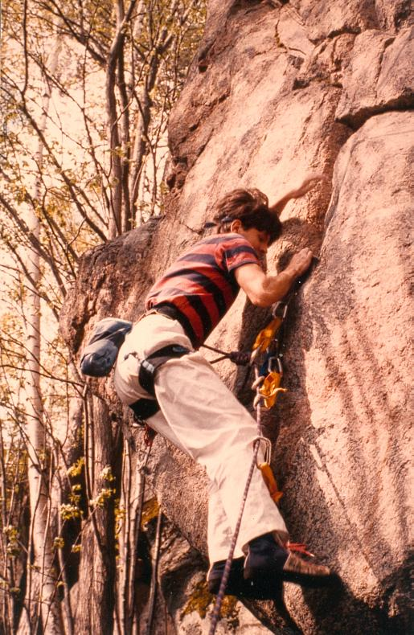

Olberget
Lat: 61.307342
Long: 16.812859
Allmänt
Olberget ligger 13.5 km från Söderhamn, nära riksväg 50 mot Bollnäs.
Huvudväggen är en 20-25 m hög, kraftigt överhängande sydvägg. Klippan
är kompakt, men de sprickor som finns är rena och fina.
Nedanför huvudväggen finns en enklare fikaplats.
Kommunikationer
<div style="float:right; width:405px; margin: 5px">
</div>
Från Söderhamn: Åk mot Bollnäs på riksväg 50. Ca 1 km efter avtagsvägen till Mohed ser du en bilskrot/däckfirma på vänster sida, sväng av höger på första vägen efter denna. (Vägen kan ibland vara i dåligt skick, parkera då på parkeringsfickan som finns på riksväg 50).
Kör förbi åkrarna och huset på vänster sida, parkera sedan vid det gamla övergivna huset på höger sida. Klippan och blocken ligger uppe i skogen på vänster sida.
Med buss: Från Söderhamn: Ta linje 100 mot Bollnäs. Be chauffören
att stanna vid vägen mellan hållplatserna Näcktjärn N och Östbo.
GPS-koordinater för klippan: N61 18 36.0 E16 48 42.0
Väggar
Huvudväggen är en 20-25 m hög, kraftigt överhängande sydvägg. Klippan
är kompakt, men de sprickor som finns är rena och fina. Berget är
gnejs. Till vänster om huvudväggen finns ett område med mindre väggar
och stora flyttblock. Lättaste nedstigningen går till höger om
huvudväggen.
Huvudväggen
Skiss av Jörgen Lundgren.
- 1
- Apostrophe
- 6+/7-
- Kort, osäkrat väggproblem längst till höger på berget. Utsteget är kruxet
- 2
- Smutsiga vanor
- 6-
- Startar på den otydliga areten mellan "Zombie Woof" och "Apostrophe". Avigt insteg i det sluttande diedret ovanför. 1 bult
- 3
- Zombie Woof
- 6+
- Fritt: Upp till hyllan: Mikael Bäckman och Per Calleberg, 1982 Fritt: Från hyllan: ("Dina-Moe-Hum") Mikael Bäckman, 1986 Överhängande dieder/spricka i högerkanten på väggen. Var noga med kilplaceringarna. Från hyllan strax under toppen leder ett tydligt dieder upp. Något svårsäkrat.
- 4
- Pojama People
- 6+
- Alternativutsteg till "Zombie Woof", i vänsterkanten av hyllan.
- 5
- Twenty years later
- 7c+
- Kraftigt överhängande, krimpig. 1 bult som ankare.
- 6
- Holy Diver
- ca 7c
- Ankare med kedja.
- 7
- "Dannes led"
- ca 7c
- Ankare med kedja.
- 8
- Så var det dags
- 8a
- Hälsinglands första 8a. Ankare med kedja.
- 9
- Turbo Lover
- 7+
- Överhängande, desperat väggklättring och layback ett par meter till höger om Sunset Crack. Leder upp till högra grenen av Sunset Crack. 2 borrbultar. Ombultad 2008.
- 10
- Sunset Crack
- 7+
- Fritt: Johan Luhr och Mathias Flodin, 1987 Tydlig spricka rakt uppför väggen. Insteget är ett slags urtag, som bildar ett litet tak. Följ sprickan, med avgjorda svårigheter på sina ställen, rakt upp. En bit under toppen, där svårigheterna är över, nås en stor sluttande hylla. Travers höger någon meter, och sedan lättare klättring rakt upp i ett hörn till toppen. Klippans finaste led. Topprepsankare uppsatt 2007.
- 10a
- Variant: Sunset högra
- 7
- Följ den högra grenen på sprickan, istället för att gå rakt upp under hyllan. På detta vis blir hela leden grad 7.
- 11
- Lunchrast
- A2
- Första biten, "Kafferast" (A1), upp till borrbulten gjordes av Mikael Bäckman och Per Calleberg 1979. Tunn bultspricka som leder upp till en borrbult vid sprickans slut. Vidare kommer man med en "rivet" och skyhooks upp till ett flak som leder upp till en sluttande hylla. Härifrån följer man den tydliga sprickan upp.
- 12
- Lunchrast
- 7c+
- Vertikal krimpfest. Ankare med kedja.
- 13
- Turist i Tillvaron
- 7
- Fritt: Jan Liliemark, 1983 Tydlig, kraftigt överhängande spricka alldeles till höger om en överhängande kamin. Klättra först upp på en hylla nedanför sprickan. Klättra sedan på goda grepp uppför blocken upp i sprickan. Jamma/sprajsa upp till en slags nisch. Klättra snett uppåt vänster upp på en stor hylla och fortsätt rakt upp i en tydlig, grov spricka till toppen. Välsäkrad. Om friends används rekomenderas en viss försiktighet, då repet lätt kan trycka in Frienden in i sprickan.
- 14
- Sri Chimnoy
- 6
- Följer den tydliga, överhängande off-width kaminen till vänster om "Turist i tillvaron". Smaklös linje.
- 15
- Fotonen
- 6/6+
- På pelaren till vänster om "Turist i tillvaron" finns en tunn spricka som leder upp till ett block och en spricka som leder diagonalt upp åt vänster. Från ett flyttblock kliver man över till den tunna sprickan och klättrar med svårighet upp till blocket. Härifrån leder en avsevärt lättare spricka snett uppåt vänster, förbi en liten björk, till en liten hylla. Härifrån gör man en lätt, men osäkrad travers mot en tydlig egg som kliver upp på och över, så att man kommer upp på en stor hylla med en död björk på. Härifrån följer man en smutsig ramp snett uppåt vänster till toppen.
- 15a
- Reflektorn
- 5
- Direktutsteg till "Fotonen". Från den stora hyllan klättrar man rakt uppför en konkav vägg, bakom den döda björken. Osäkrad.
- 16
- Finally started
- 4-
- Fritt: Kent Andersson och Dennis Butler, 1981 Denna led återfinns i vänsterkanten av väggen. Klättra uppför en lätt, något skitig häll upp till en hylla. Klättra rakt upp och följ hörnet med den grova jamsprickan ovanför. Välsäkrad.
- 16a
- Variant: Finurlig start
- 3+
- Följ den lätta, något skitiga hällen upp till hyllan, men klättra härifrån upp i ett hörn på högra sidan en egg. Vid basen av den grova jamsprickan på "Finally started" kliver man vänster över en vass egg och följer sedan sprickan upp.
- 16b
- Variant: Direktinsteg
- 4-
- Kort dieder rakt under "Finally Started".
Lilla väggen
Skiss av Jörgen Lundgren.
Ligger 30 meter uppåt vänster från Huvudväggen. Bilder från i huvudsak Lilla väggen finns på Bollnäs klätterklubbs sida:
- 17
- Sunrise
- 6b+
- Fin varierande klättring. Ankare med kedja.
- 18
- One size fits all
- 5+
- Grov spricklinje som leder snett upp åt vänster.
- 19
- Odöpt
- 5+
- Rak spricklinje alldeles t h om "Sauervotze". Sammanfaller med "One Size Fits All" alldeles under toppen.
- 20
- Sauervotze
- 3+
- Tydligt dieder upp till en stor krokig björk.
- 22
- Annikis hörn
- 5-/5
- Första diedret till vänster om "Sauervotze". Startar bakom ett mindre flyttblock.
- 23
- Nåja
- 3-
- Utanför skiss: Ligger 10 m till vänster om "Annikis hörn". Startar i en kort fingerspricka. Travers vänster och sedan scrambling uppför ett flackt dieder.
- 24
- En Quartz led
- 4+
- Ligger ca 15 m till vänster om "Annikis hörn", alldeles i början av en trång ravin. Går uppför väggen som utgör ravinens högra sida, rakt upp vid en tydlig, vit kvartsfläck. Osäkrad.
- 25
- Åppiravinen
- 4-
- Utanför skiss: Ligger ca 5 m in i ravinen. Tydlig spricka.
- 26
- Räddaren i nöden
- 5+
- Utanför skiss: Ligger på en liten vägg, dold bakom flyttblock, drygt 50 m till vänster om "Sauervotze", bakom en stor kraftig björk. Överhängande hörn med knytnävsspricka.
Sudoku-väggen
Ligger 200 meter vänster om huvudväggen på ett stort block. Bilder från i huvudsak Sudoku-väggen finns på Bollnäs klätterklubbs sida:
- 27
- Sudoku
- 6c+
- Tunn start.

Bouldering
Boulderingen vid Olberget finns separat beskrivet i Sverigeföraren: = Olberget =
Olberget finns beskrivet separat i Sverigeföraren:
Kategori:Saknar kolumner
Kategori:sport
Kategori:trad
Kategori:sva
Kategori:vertikalt
Kategori:överhäng
Kategori:Hälsingland
Kategori:Hälsingland